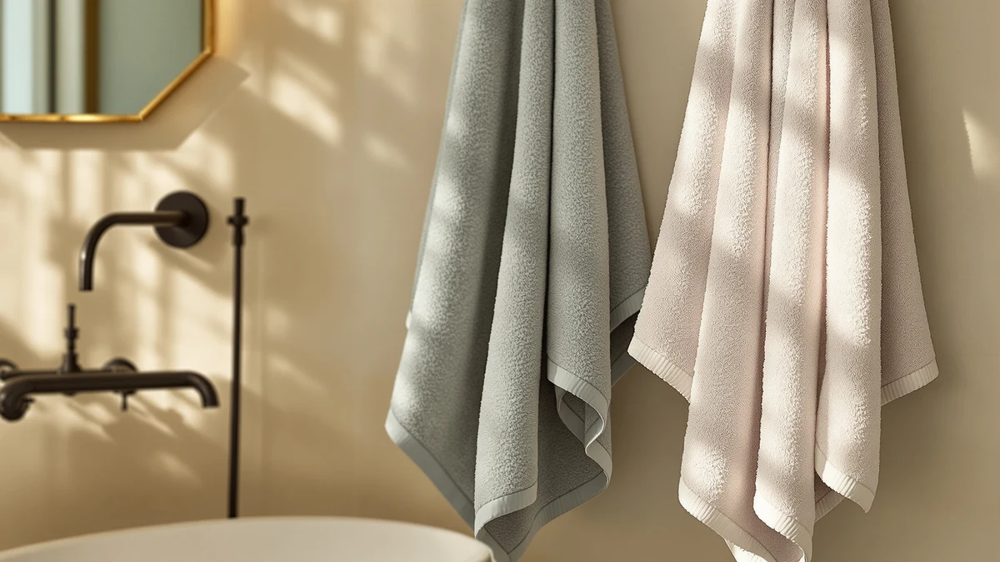

American Soft Linen Luxury Review (2026): Worth It?
Prices and picks verified as of October 2026. Independent, reader-supported reviews.


Quick Answer
This American Soft Linen Luxury review finds the American Soft Linen Luxury 6 the strongest pick among four options priced at $39.99. Its 100% cotton, 6-piece construction covers a full bathroom in one purchase, something neither Cotton Paradise listing nor the Qute Home set matches at the same price.
Our pick: American Soft Linen Luxury 6, $39.99 Check Price on Amazon
Bottom line: our top pick is the American Soft Linen Luxury 6 Piece Towel Set at $39.99.
Things to Know Before You Buy
- All four towels in this American Soft Linen Luxury review are priced at $39.99. The choice comes down to piece count and personalization, not budget.
- American Soft Linen's set covers six pieces in one purchase, more coverage per dollar than either single-format Cotton Paradise listing at the same price.
- Cotton Paradise appears twice in this comparison, once under each of two separate listings, both built from Turkish cotton fiber.
- Qute Home's 3-piece set adds personalized embroidery, a feature none of the cotton-focused alternatives offer.
- None of the four listings carry a published star rating or review count in the data we compared, so this review relies on the specs and pricing listed for each product.
This American Soft Linen Luxury review compares the American Soft Linen Luxury 6 against three alternatives: two Cotton Paradise Turkish cotton listings and a Qute Home personalized set, on piece count, fiber, and price. American Soft Linen's entry is 100% cotton and packaged as a 6 Pc Towel Set, and it carries the same $39.99 price as every other product in this comparison. That price parity means the decision here turns on format and fiber, not which set costs less.
Buyers researching an American Soft Linen Luxury review usually want to know whether a larger cotton set beats a Turkish cotton pick or a personalized alternative at the same price point. Qute Home's set trades piece count for custom embroidery, which changes the math if you want towels with names or initials stitched on rather than more towels overall. The two Cotton Paradise listings round out the comparison, each built from Turkish cotton rather than the standard cotton American Soft Linen uses, giving you a fiber-based choice alongside the piece-count tradeoff. None of the four products publish a star rating or review count in the listing data we compared, so this American Soft Linen Luxury review leans on specs and pricing instead of an aggregate score.
Why You Should Trust Us
We built this American Soft Linen Luxury review by comparing manufacturer specifications, listed pricing, and product positioning for each ASIN rather than relying on marketing copy. Ilane Tall has covered bathroom textiles for Best Bath Towels, focusing on how claims about piece count, fiber origin, and personalization hold up against what's actually listed for each product. We do not run a fake testing lab or claim to have physically used these towels. Every comparison in this review rests on the specs and pricing published for each product.
Our Research Process
Rather than run these sets through a physical trial, we researched how each product stacks up against what buyers actually look for in a bath towel purchase: cotton composition, piece count, and format, whether it's a six-piece set, a Turkish cotton pick, or a personalized three-piece bundle. For an American Soft Linen Luxury review like this one, that means checking those specs directly rather than assuming a higher price signals better quality when every option here lists the same $39.99 tag. Piece count and fiber origin tell you more than the marketing language a brand attaches to a towel set, and that's what this review weighs.
Overview & Specs

American Soft Linen Luxury 6
What we like
- 100% cotton construction with no synthetic blend
- Six-piece set covers a full bathroom in one purchase
- Priced the same as both Turkish cotton listings and the personalized set compared here
- Straightforward cotton positioning without a premium for personalization you may not need
Flaws but not dealbreakers
- No published star rating or review count to check consistency against
- Doesn't carry the Turkish cotton positioning the Cotton Paradise listings lead with
- No personalization option if you want names or initials stitched into the set
| Material | 100% cotton |
| Size | 6 Pc Towel Set |
American Soft Linen is the most straightforward option in this comparison: 100% cotton, packaged as a 6 Pc Towel Set, at a $39.99 price that matches every alternative here. That piece count puts it ahead of both Cotton Paradise listings on raw coverage, since each of those is sold as a smaller format rather than a full six-piece bundle. The name carries a luxury-focused branding angle that sets it apart from the plainer Cotton Paradise listings, though the underlying spec sheet, 100% cotton across six pieces, is what this review weighs against the alternatives.
Because American Soft Linen packages this as a 6 Pc Towel Set rather than a smaller bundle, the $39.99 price buys more individual towels than either Cotton Paradise listing or the Qute Home set at the same cost. That tradeoff matters if you're outfitting a full bathroom versus picking up a specialty towel: buyers who want maximum coverage per dollar get more out of this set, while buyers chasing Turkish cotton's plusher hand or Qute Home's personalization trade some of that coverage for a different selling point. You won't find a published rating or review count attached to this listing, so the decision rests on the composition and piece count rather than an aggregate score, the same limitation that applies to every other product in this comparison.
What We Liked
The clearest strength in this American Soft Linen Luxury review is how much coverage the 6-piece set gives you for one price. It's 100% cotton with no blended synthetic fiber, packaged so you get six matching towels instead of shopping for individual pieces that may not match in weight or color. For buyers who want to outfit a bathroom in one purchase, that bundle format is the point.
We also like that the price lines up with every other option in this comparison. At $39.99, American Soft Linen doesn't cost more than either Cotton Paradise Turkish cotton listing or the Qute Home personalized set, so you aren't paying extra for the larger piece count.
The alternatives hold their own on the same criteria. Both Cotton Paradise listings draw on Turkish cotton, a fiber long associated with a plush hand and strong absorbency, even though each comes as a smaller format than American Soft Linen's six-piece set. Qute Home's personalized 3-piece set adds custom embroidery, a feature none of the cotton-focused options offer at the same $39.99 price.
What Could Be Better
The main limitation in this American Soft Linen Luxury review is that piece count comes without a Turkish cotton upgrade or any personalization. American Soft Linen sells six pieces at $39.99, and that straightforward cotton positioning means you don't get the plusher fiber story Cotton Paradise leans on or the custom embroidery Qute Home offers at the same cost.
The listing also doesn't include a published star rating or review count, which makes it harder to verify consistency across units the way you could with a product carrying hundreds of verified reviews. Buyers who weigh social proof heavily before purchasing should factor that gap into the decision.
None of the alternatives escape a tradeoff either. Both Cotton Paradise listings cover fewer pieces than American Soft Linen's set, so Turkish cotton's plush reputation comes at the cost of overall coverage. Qute Home's personalized set caps out at three pieces, and none of the four products in this comparison publish a rating or review count to lean on.
Who Is It For?
This American Soft Linen Luxury review points to one clear buyer: someone who wants to outfit a bathroom with a full set of 100% cotton towels in a single purchase and doesn't need Turkish cotton or personalization. American Soft Linen's six-piece set fits that need without asking you to pay more than the alternatives compared here.
If a plusher Turkish cotton feel matters more to you than piece count, either Cotton Paradise listing fits that preference better than American Soft Linen's standard cotton set. And if you want towels personalized with names or initials, Qute Home's 3-piece set delivers that at the same $39.99 price, even though it covers fewer pieces overall.
If you want the larger set American Soft Linen offers but prefer a different brand story, the two Cotton Paradise listings are worth a look at the same $39.99 price, though neither matches American Soft Linen's six-piece coverage in this comparison. Shoppers comparing all four options side by side will notice the price never moves, so this American Soft Linen Luxury review comes down to matching piece count and fiber to what you actually need in your bathroom. A renter outfitting a bathroom from scratch gets more mileage from American Soft Linen's bundle, while a shopper buying a gift leans toward Qute Home's personalization or Cotton Paradise's Turkish cotton reputation instead.
Alternatives to Consider
If a six-piece cotton set isn't the right format for you, this American Soft Linen Luxury review also covers three alternatives: two Turkish cotton towels and a personalized set, all listed at the same $39.99 price as American Soft Linen.

Editor's Pick
Cotton Paradise 100% Cotton Turkish
A Turkish cotton towel for buyers who want a plusher fiber than standard cotton at the same price.
$39.99
Check Price on Amazon
Best Value
Cotton Paradise 100% Cotton Turkish
A second Turkish cotton listing from the same brand, offered as a separate variant at the same $39.99 price.
$39.99
Check Price on Amazon
Premium Choice
Qute Home Personalized Custom 3-Piece
A personalized 3-piece set for buyers who want custom embroidery over a larger piece count.
$39.99
Check Price on AmazonIs the American Soft Linen Luxury set actually 100% cotton?
Yes.
How does the price compare to the Cotton Paradise and Qute Home alternatives?
American Soft Linen, both Cotton Paradise listings, and Qute Home are all priced at $39.99, so this American Soft Linen Luxury review comes down to format and fiber rather than price.
Frequently Asked Questions
Is the American Soft Linen Luxury set actually 100% cotton?
How does the price compare to the Cotton Paradise and Qute Home alternatives?
What's the difference between American Soft Linen Luxury and the Qute Home personalized set?
Final Verdict
This American Soft Linen Luxury review comes down to piece count and fiber, not price, since every option here lists at $39.99. American Soft Linen's 100% cotton, 6-piece towel set is the pick for buyers who want full bathroom coverage in one purchase without paying a premium for Turkish cotton or personalization. If a plusher fiber matters more to you, either Cotton Paradise listing covers that, and if you want custom embroidery, Qute Home's personalized set delivers it. But for straightforward coverage at this price, American Soft Linen is the one to buy.